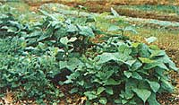
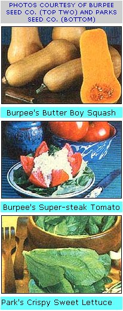

It's the dead of winter, and in many parts of the country the cold wind mutters threats of snow. The frost is deep in the soil, and the green of the garden is only a memory. Inside, the rootcellar's starting to look mighty bare, and the jars of put-by tomatoes are dwindling fast. Grab a kitten for comfort, curl up in front of the fire with your garden plan and the new seed catalogs . . . and dream of spring's fresh promise.
Two of the All-America Selections for 1980 are of particular interest to vegetable gardeners. A wonderful vivid yellow zucchini, named Gold Rush, sets loads of squash on compact plants (they take up a mere four square feet!). The unusual plant's habit of growth is upright and open, so air can easily penetrate to the base and prevent overly wet soil and rotting fruit. Furthermore, just think how attractive bright yellow Gold Rush would look when steamed up with a crisp batch of dark green Scallopini squash ... a Patty Panlzucchini cross that was an All -America winner in 1977!
Another 1980 prizewinner, the bronze medal Holiday Time pepper, is both ornamental and edible! The compact plants (a full-grown specimen can be put in a quart jar) will even bloom and set fruit indoors . . . and you don't need to worry about insect-or hand-pollination. The fruits poke up through the foliage like tiny dunce caps, and they color as they mature from yellow to orange to scarlet. When it's time for some spicy food, you'll find that the little peppers can make a pungent contribution to your meal.
And here's a little more All-American news: The (organic, naturally) garden at MOTHER's Eco-Village has been designated a display garden by the All-America Selections folks. This means we'll be exhibiting AAS winners from the past, present, and immediate future . . . and that people who attend next year's seminar series on MOTHER's beautiful mountain property will have still another sight to look forward to! More about our organic display garden the only one we know of!-in future issues.
Folks used to joke that the only way to really appreciate the flavor of sweet corn was to have a pot of boiling water next to you in the field as you cut the succulent ears . . . because the time it took to walk from the corn patch to the kitchen was considered long enough for this delicate vegetable's rich supply of sugar to start changing to starch.
Well, the need for such haste disappeared-back in 1961-with the development (based on research done at the Universities of Michigan and Illinois) of the "shrunken gene" varieties of extra sweet corn. The two new hybrids (known as Early Extra Sweet and Illinichief Super Sweet) are twice as sweet as normal corn at the moment of harvest and-because the sugar content converts to starch more slowly-four times as sweet 48 hours after picking. In fact, the only problem with these fine cultivars is that they absolutely must be kept isolated from other varieties of corn ... since cross-pollination causes the extra-sweet hybrids to revert to their dominant ancestor, starchy field corn.
However, several seed houses are now offering alternative varieties that don't need to be separated from other types of corn: the EH (for everlasting heritage) hybrids. These corns remain tasty for up to two weeks after pickin', and their pericarps -the protective skins of the kernels-are much more tender than those of "normal" corn. The new EH hybrid species are called Kandy Korn (Gurney), D-5 (Burrell), Tender-treat EH and Mainliner EH (Burpee), Golden Sweet EH (Stokes), and losweet EH (Herbst). Try 'em . . . and leave the pot on the stove!
Brent Elswick brings us all up to date on the best of the recent croppin' introductions on page 36 of this issue, but some of the exciting vegetables introduced for 1980 are just too new for Brent to have tried. Burpee, for instance, has come up with a compact cucumber-Bush Champion -that can be grown as close. ly, as 12 inches in the row . . . and does a terrific job in pots on the patio, too. The same company's new Butter Boy Hybrid butternut squash produces a bumper yield in one-third less space than the old favorite Waltham takes up. Burpee has an upgraded beefsteak tomato, as well-called Super-steak-that brings Fusarium and Verticillium resistance to the old favorite.
For the latest in leaf lettuce, Park is featuring Crispy Sweet (which combines the flavor of butter-head types with the cut-and-come-again qualities of loose-leaf varie. ties), while the firm's new melon-Honeydew Pineapple -is early (85 days) and has a unique tropical flavor.
An "ever bearing" potato is going to be offered by Henry Field: called the McNeilly va. riety, the hybrid continues to make new tubers through September ... allowing you to harvest some and leave the rest to mature. Gurney, in turn, has introduced the Butte potato ... which out-produces the Russet Burbank and has 58%a more vitamin C and 20%a more protein than other varieties.
Gurney also offers a novel dwarf grapefruit tree-the product of the company's Micro-Budding technique-which will bear fruit indoors in two to three years ... and that's up to ten years earlier than normal kinds!
As you can see (and we've dropped just a few tantalizing tips), 1980 is going to be a great year for new vegetables. So pen a line to some of the companies in MOTHER's seed-supplier access list on page 174 ... and order up some wish books!
You can, of course, get a fine selection of seeds from any one of the big national outfits, but did you know that there are companies that specialize in varieties for particular geographical areas? Hastings and Wyatt-Quarles, for example, offer plants for the South, while Burrell sells far West favorites. Roswell, on the other hand, deals in items for the Southwest . . . and Johnny's, Farmer, and Vesey all have hardy seeds for the far North.
So if your climatic conditions are really unusual-very dry, or cold, or hot-consider placing your garden purchase order with one of the regional seed merchants. (By the way, some of the big companies regionalize their catalogs, too: Burpee has its famous "bulls-eyes" to indicate vegetables particularly suited to your area, Thompson & Morgan indicates-with asterisks-varieties that will do well in the South, and the Dave Wilson Nursery in California breaks down the country into 41 zones and suggests fruit trees especially adapted to each!)
|
 |
 |
|